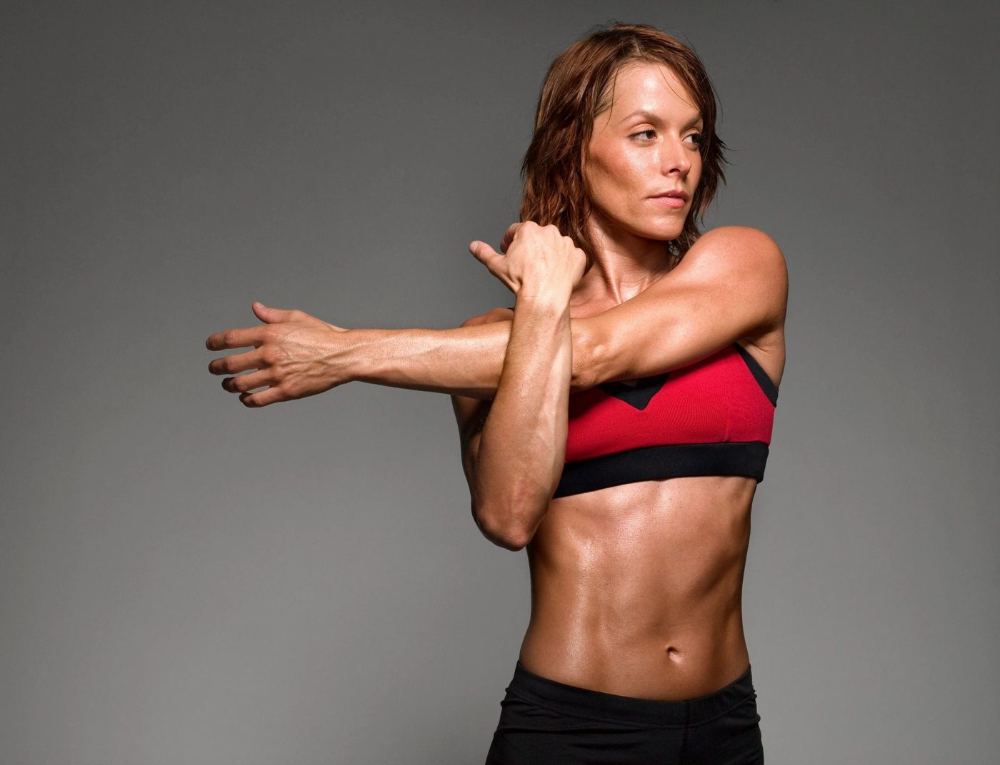

I can honestly say the thought about building muscles makes me a little paranoid because my mind immediately thinks of bodybuilding, a bulky type of muscle. When I learned about hormones and long-term health, muscles were something that kept coming to the surface. When working with clients, I learned that we often think about health and fitness as losing weight or becoming smaller. But what if the real secret to feeling energized, balancing hormones, aging gracefully, and maintaining a healthy weight wasn't losing muscle—but building it?
Muscle is often overlooked, especially among women. Yet it is one of the most powerful organs in the body when it comes to metabolism, blood sugar regulation, hormone health, and longevity.
If you're struggling with fatigue, stubborn weight gain, hormone imbalances, or navigating perimenopause and menopause, building muscle may be one of the most important investments you can make in your health.
First, let's talk about what a muscle is. Muscle is made up of specialized fibers that contract and produce movement. We often think of muscle simply as something that helps us exercise, but it does far more than that.
Skeletal muscle acts as a metabolic powerhouse. It stores glucose, burns calories, supports posture and movement, protects bones and joints, and even communicates with other organs through signaling molecules called myokines.
In fact, researchers now consider skeletal muscle an endocrine organ because it produces hormones and hormone-like compounds that influence the entire body.
Basically, muscle isn't just for strength—it helps regulate your health from head to toe.
The Science Behind Muscle and Metabolism
One of the biggest reasons muscle is so important is that it directly impacts your metabolism.
Muscle tissue requires energy to maintain itself, even when you're resting. This means the more muscle you have, the more calories your body burns throughout the day.
As we age, we naturally lose muscle mass through a process called sarcopenia. Research suggests adults can lose approximately 3-8% of muscle mass per decade after age 30, with the rate accelerating after age 60.
This loss of muscle can contribute to:
- Slower metabolism
- Increased body fat
- Reduced energy levels
- Greater insulin resistance
- Increased risk of chronic disease
- Loss of strength and mobility
However, resistance training and adequate protein intake can help preserve and even build muscle at any age.
One of the muscles' most important jobs is helping regulate blood sugar.
After you eat carbohydrates, glucose enters the bloodstream. Muscle acts like a storage tank, pulling glucose out of the blood and storing it as glycogen for future energy use.
The more muscle you have, the more glucose your body can effectively manage.
When muscle mass is low:
- Blood sugar tends to rise more easily
- Insulin resistance becomes more likely
- Fat storage increases
- Energy crashes become more common
- Cravings may intensify
Research consistently shows that resistance training improves insulin sensitivity, meaning your cells respond better to insulin and can use glucose more efficiently.
This is especially important for women dealing with:
- PCOS
- Prediabetes
- Type 2 diabetes
- Weight loss resistance
- Hormonal imbalances
Building muscle essentially creates a larger "sink" for glucose, helping stabilize blood sugar levels and support metabolic health.
How Muscle Supports Hormone Balance
Hormones don't work in isolation. They depend on healthy tissues throughout the body—including muscle.
When you build and maintain muscle, you create positive effects on several key hormones.
Insulin
Insulin is responsible for moving glucose from the bloodstream into cells.
Muscle improves insulin sensitivity, reducing the burden on the pancreas and helping maintain balanced blood sugar levels.
Cortisol
Chronic stress and elevated cortisol can contribute to weight gain, muscle breakdown, and hormone imbalances.
Strength training, when performed appropriately, has been shown to improve stress resilience and support healthy cortisol regulation over time.
Growth Hormone
Resistance training naturally stimulates growth hormone production, which plays a role in:
- Muscle repair
- Fat metabolism
- Tissue regeneration
- Healthy aging
Testosterone
Women produce testosterone too, just in smaller amounts than men.
Healthy testosterone levels support:
- Lean muscle mass
- Energy
- Libido
- Motivation
- Bone strength
Strength training can help support healthy testosterone levels and improve body composition.
Muscle is very important during perimenopause and menopause.
As estrogen levels begin to fluctuate and decline during perimenopause and menopause, many women notice:
- Weight gain around the abdomen
- Loss of strength
- Increased fatigue
- Reduced bone density
- Blood sugar instability
- Slower metabolism
This is where muscle becomes incredibly important.
Estrogen helps preserve muscle mass. As estrogen declines, muscle loss can occur more rapidly if we aren't actively working to maintain it.
Building muscle during this stage of life can help:
Support a Healthy Metabolism- More muscle helps offset the metabolic slowdown many women experience during menopause.
Improve Insulin Sensitivity- Menopause is associated with increased insulin resistance. Strength training can help improve glucose control and reduce this risk.
Protect Bone Health- Muscles pull on bones during exercise, stimulating bone growth and helping maintain bone density. This is crucial because postmenopausal women face a higher risk of osteoporosis.
Improve Body Composition- Many women find that endless cardio becomes less effective during menopause. Resistance training helps maintain lean mass while reducing body fat, often leading to better long-term results.
Support Longevity and Independence- Maintaining muscle helps preserve balance, mobility, and strength as we age, reducing the risk of falls and injury.
Muscle Is a Longevity Organ- Researchers now recognize muscle as one of the strongest predictors of healthy aging.
Higher muscle mass has been associated with:
- Reduced risk of chronic disease
- Better cognitive function
- Improved immune function
- Greater mobility
- Longer lifespan
Muscle isn't just about looking toned. It's about creating a resilient body that supports you for decades to come.
For years, many women have been told to eat less and do more cardio. Yet one of the most powerful tools for hormone balance, blood sugar regulation, healthy aging, and sustainable weight management is often overlooked: muscle.
Muscle helps regulate blood sugar, supports hormone health, protects bones, boosts metabolism, and improves longevity.
Whether you're in your 30s, navigating perimenopause, or thriving in menopause, building muscle isn't about becoming bulky—it's about creating a stronger, healthier, and more resilient version of yourself.
Your future self will thank you for every pound of muscle you build today.